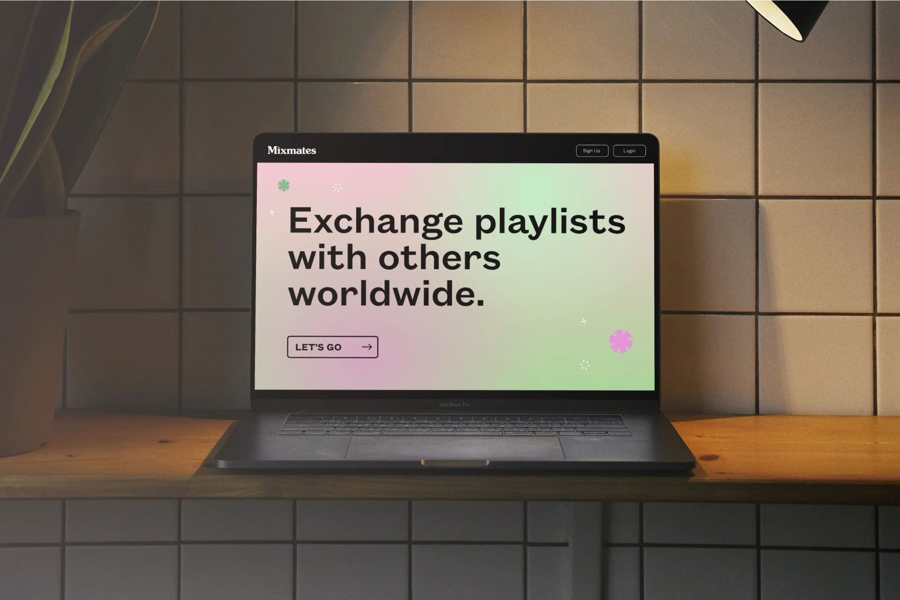
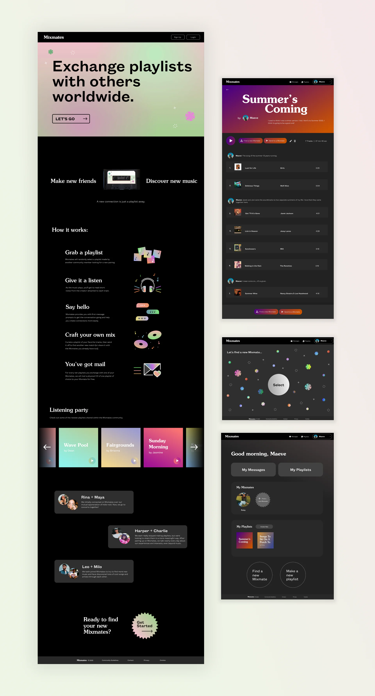
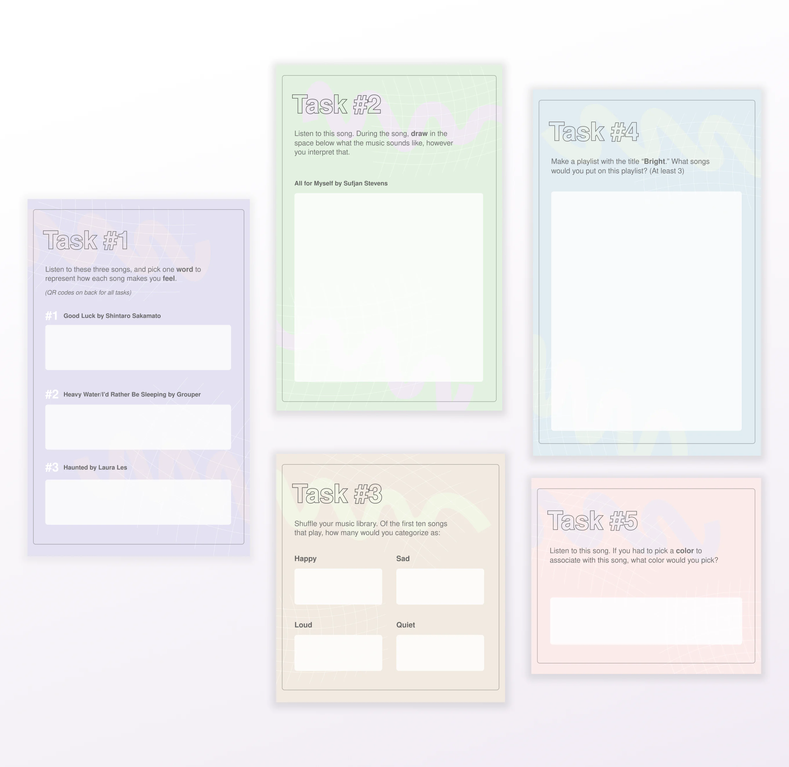
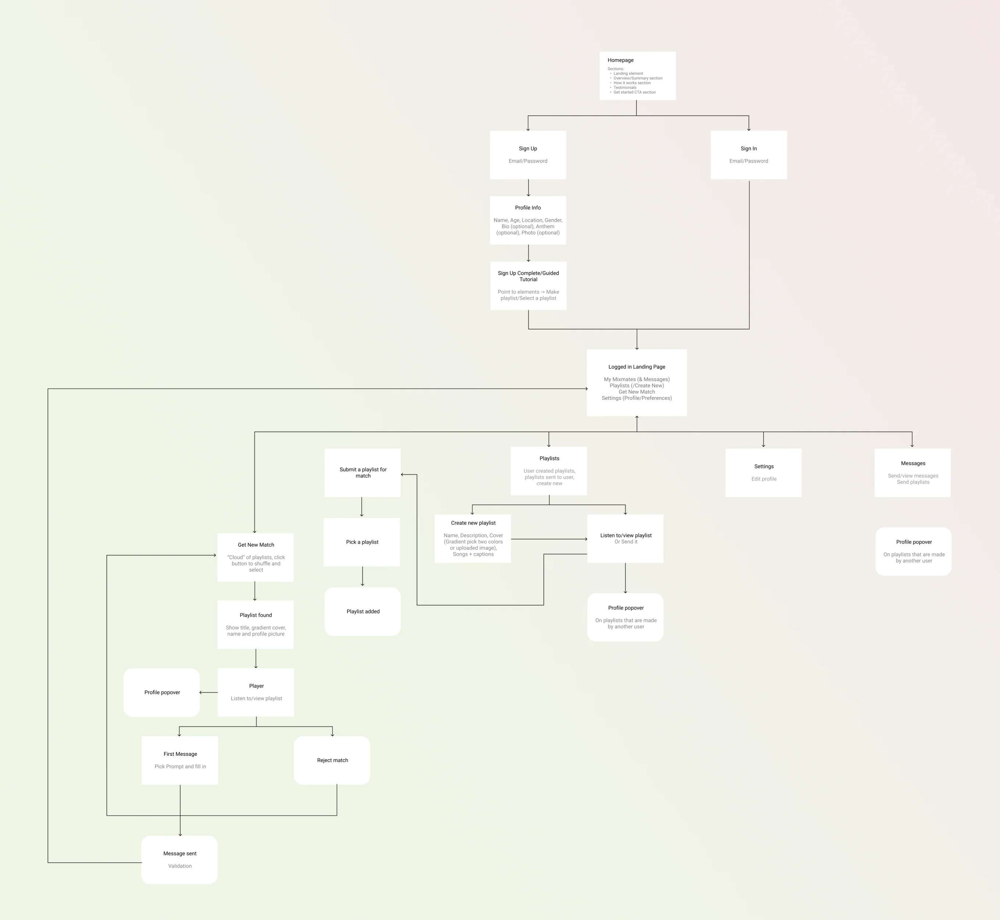
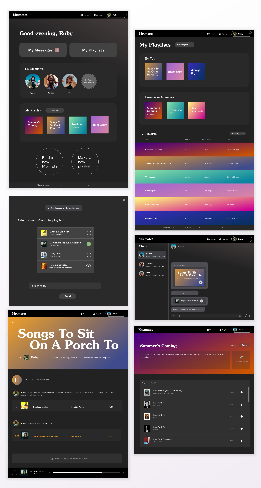
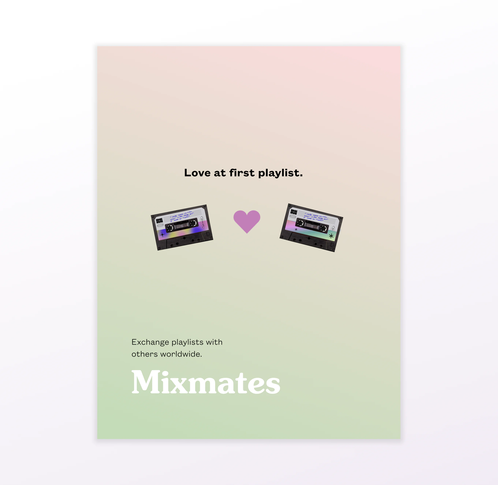

Case Study
Mixmates
Web Design | UI Design | Branding
Overview
Mixmates is a platform on which music listeners can find and exchange with “playlist pen pals” of sorts, meaning users will send playlists (and messages) back and forth.
Mixmates seeks to leverage the inherent social aspect of music and playlist curation, making it easier to find both connections with other listeners and music recommendations in the process.

Design principles
-
Connection
- Give first message prompts to get the conversation started
- After exchanging ten playlists with a Mixmate, users mail a physical CD copy of a playlist of their choice to their Mixmate
-
Personality
- Ability to add notes to each song within playlists
- More details featured on profile pop over
-
Safety
- Particular information required upon sign up to increase transparency
- Users can block or report other users at any time

Process
Start with a cultural probe to investigate how people respond to principles of emotion and connection as they relate to music.

Develop a sitemap and first round prototype, then user test.

Iterate prototype based on user testing.

